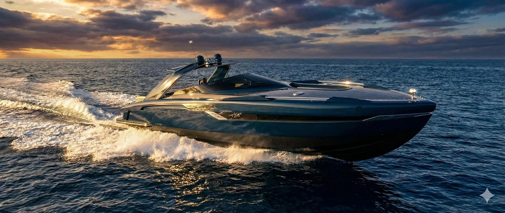
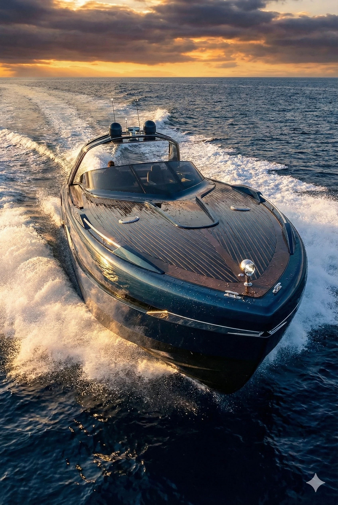
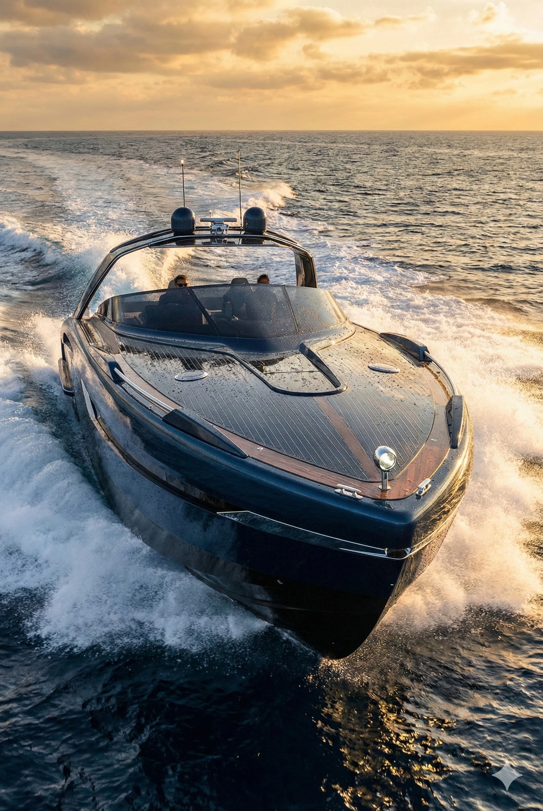
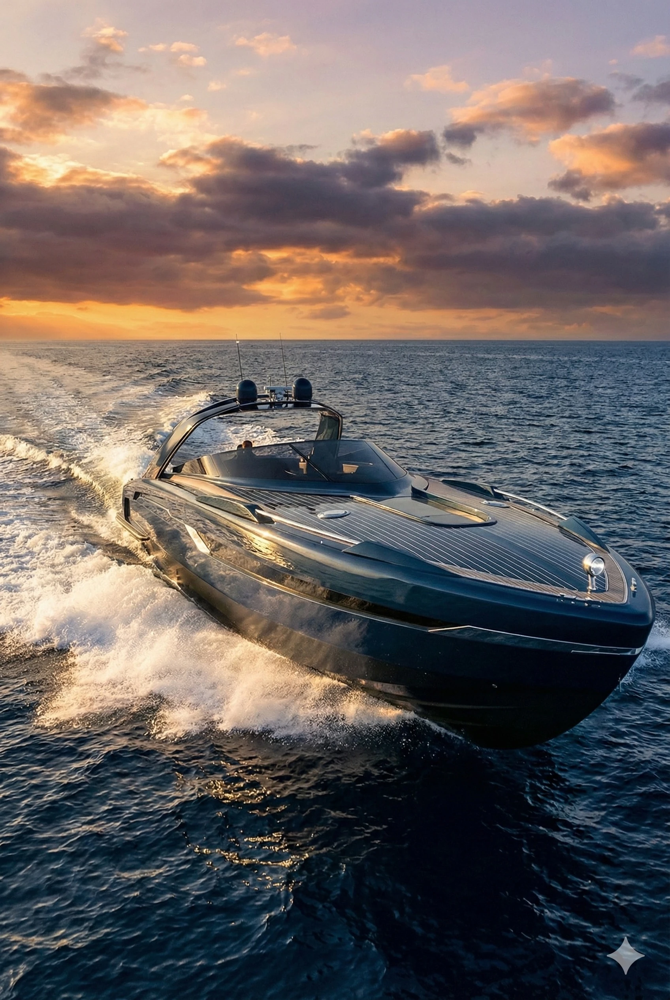

La Collezione / 03 · MAS 56 / Archivio Progettuale
MAS 56
Eleganza in Movimento.
The Pleasure of Being in Motion
MAS 56 introduces a different scale of presence within the collection. Its original visual archive suggests a yacht conceived to be confident in profile yet composed in character, with the life aboard considered alongside its exterior identity.

Il Concept
The MAS 56 study offers an opportunity to explore a broader expression of the Italian sporting motor yacht. Its identity should stand independently, not simply enlarge the proportions of a smaller design. Original imagery and moving-image studies form the visual basis of this direction, while the definitive product brief remains to be established.
Le Linee
The exterior story will draw on the balance of major surfaces, the continuity of the profile and the rhythm of the deck arrangement visible in the source renderings. The object should remain the centre of the presentation, without unrelated footage or invented performance statements. The objective is a presence that feels both assured and restrained.
La Vita a Bordo
A greater presence on the water should correspond to an equally considered experience for the people aboard. Circulation, moments of privacy and opportunities to gather together are priorities for the next design phase. The final arrangements and amenities will be described only when supported by a reviewed project layout.
Dettagli & Materiali
The intended interpretation calls for disciplined treatment of finishes, connections and exterior detailing. Every surface should support the overall character of the yacht rather than compete with it. Materials, equipment and engineering choices remain matters for technical validation, not decorative assumptions.
Dati Tecnici
MAS 56 is the confirmed collection name. The future VELLARIO edition, including dimensions, propulsion and arrangement, has not yet reached an approved technical definition.
Galleria
Original MAS 56 imagery only, including exterior perspectives and model-specific moving-image studies.




Contatti
Details of the future personal introduction process will be published when the service is operational.
Contatti →